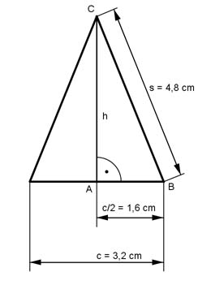

Pythagoras Aufgabe 45 Berechnen Sie die Fläche A eines gleichschenkligen Dreiecks in cm², wenn die Grundseite c =3,2 cm und ein Schenkel s = 4,8 cm.  Satz von Pythagoras im Dreieck ABC. BC² = h² + AB² |-AB2 h² = BC² - AC² c h² = s² - (---)² 2 h² = 4,8² cm² - 1,6² cm² = 20,5 cm² |√ h = 4,5 cm c * h 3,2 cm * 4,5 cm A = ------- = ----------------- 2 2 A = 7,2 cm²